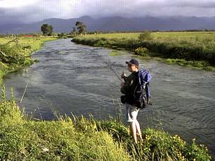
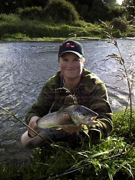

釣行日誌 ＮＺ編 「その後で」
ヒットとストライクの違い
1999/12/15(WED)-5
大きくクランク状に川が蛇行している場所まで来て、ディーンが座り込んでいる。
「ん？ もう疲れたのかい？」
「いいや、フライを替えていたんだ」
どうやらこの強風に業を煮やして、抵抗の大きいウルフパターンから小さくて重いニンフを選んでいるようだ。
「時にさぁ、ゴウ。 あのビデオにはボクどのくらい映っていたの？」
あのビデオというのは、田代法之氏がＮＺ南島ウェストランドを訪れてマッチ・ザ・ハッチの釣りを楽しむという内容であり、文芸春秋社から発売されたビデオのことである。
「うーん、そうだなぁ、だいたい１分ぐらいかなぁ.....」
「････１分････････本当かい？ 本当に１分なの？」
「うーん、まぁ長くても２分くらいかな....」
“地元の少年がガイドをしてくれることになりました....”というようなナレーションでチラッと画面に映ったディーンのまだあどけない顔が浮かんだのだが、聞けば彼はその日、丸一日撮影隊を案内しての大活躍だったらしい。
「ショックーぅ.....」
「まぁ、そんなに落ち込むなよ。 オレのホームページで宣伝しておいてやるからさぁ」
などと励ましたものの、肩を落とす純朴な若者に、夏とはいえど片田舎、冷たい風が吹き付けていた。
クランク状の蛇行の最初の曲がりまで来たところで、流れ込みのザワザワの水面に体半分ほども突きだして鱒がライズするのが見えた。
「ディーン、いたぞいたぞ。食い気たっぷりだ」
「どこどこ？」
「あそこのプールのアタマ。枯れ枝の右側。でも動いてるかもしれないから、弛みから攻めていった方が無難だぜ」
「ようし...」
ということで、彼は再度ドライフライを結び、慎重に淵の弛みから手探りで釣ってゆく。真ん中、左の弛み、右の筋などを数回流したものの、水面は沈黙したままである。彼は数歩慎重に歩みだし、同じラインの３mほど上流を攻め直している。
「････････おかしいな？」
今度も変化の起こる気配が無い。あのライズの様子では、たまたま流れてきたバッタか何かに飛びついたのかな？定常的なライズではないようだな.....。
彼が次の３mを攻めるために歩みだした瞬間、ドライフライがしゅぽっと吸い込まれる。
「ヒット！ヒット！」
「うん？ 何？」
あわてて水面を見たディーンはフライが消えていることに気づくと、遅まきながらしっかりと合わせを決める。
「イェーイ！ ストラーイク！ ゴウッ、今度からストライクッ！って声かけてくれよなっ！」
ついついヒットと叫んだのが、当地ニュージーランドでは、ストライク！と言うのが一般的なのであった。
まことに奔放・気楽（私から見ればあまりに無造作）にロッドを扱い、ディーンはやりとりを楽しんでいる。

まあ、子供の頃からこの川で鱒を釣って大きくなった彼からすれば、私が子供の頃に近所の川でアカムツを釣ったような感覚なのであろう。とはいえ掛かったブラウントラウトはなかなかの良型らしく、ジーコジージーとドラグを鳴らしている。
「あっ、ディーン、ネット忘れたな？」
「うーん、でも大丈夫だ。ネット持ってないときの方が大物が釣れるから」
余裕でサングラスを外してから熟練の手つきで岸辺に野生を寄せてきたディーンは、ひょいっと魚体を抱き、カメラを構えている私に向けて突きだした。

「ナイスガイド、助かったよ」
久しぶりに見るスプリングクリークのブラウンは、輝く銀色の腹部が眩しかった。
「いやぁ、あそこで出るとは全然思わなかったよ。サンキュー、ゴウなら立派にガイドが務まるよ」
「あはは、今日のクライアントは腕が良くて助かるよ」
一年で一番日が長いこの季節、陽はまだ高く、私達の時間はたっぷりとある。
釣行日誌ＮＺ編 目次へ
サイトマップ
ホームへ
お問い合わせ